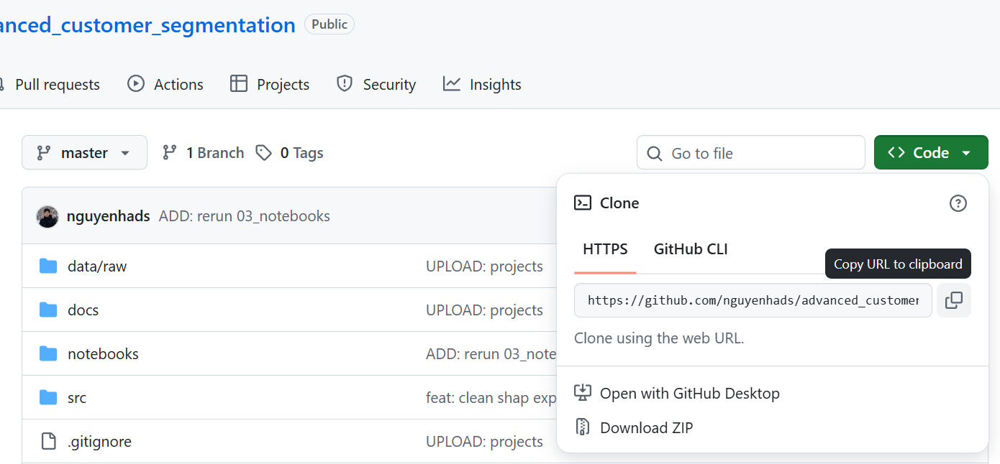
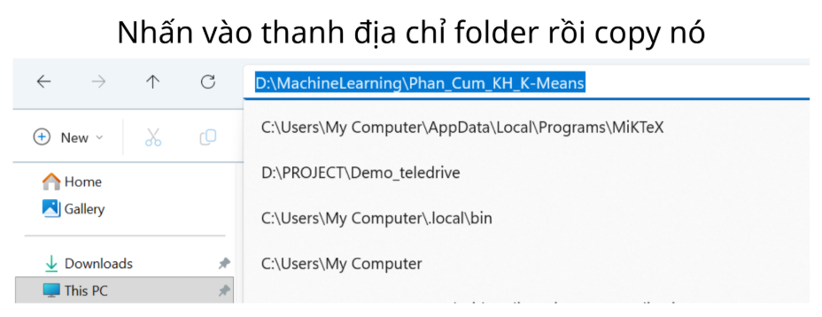
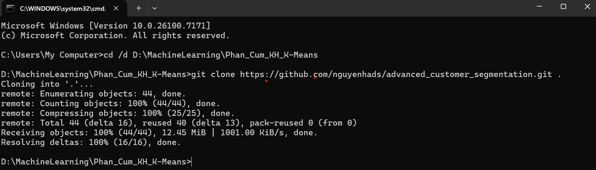
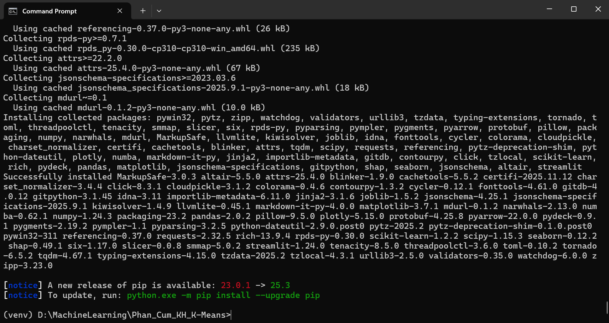
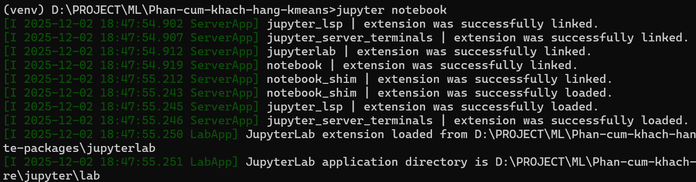
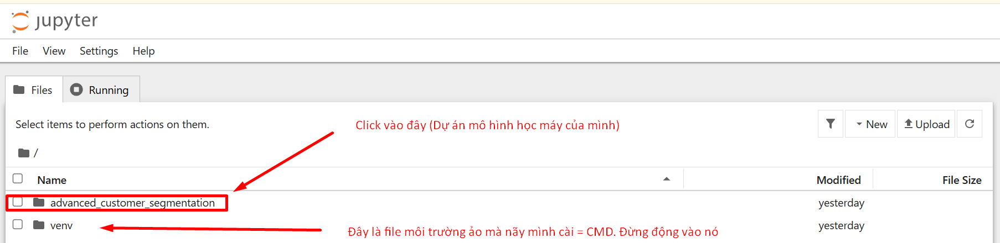
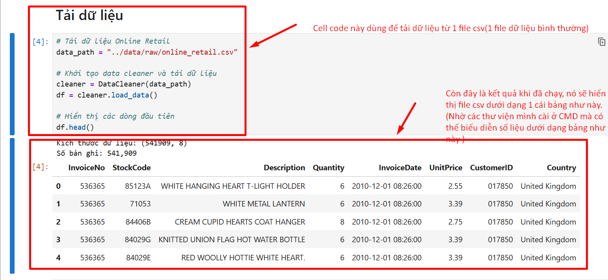
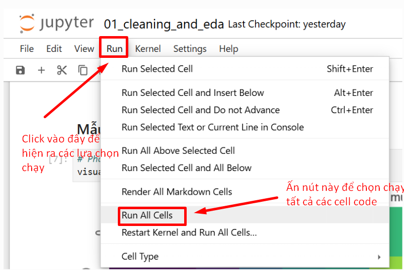

Hướng Dẫn Toàn Diện Triển Khai Mô Hình Học Máy Cơ Bản
Dec 04, 2025I. Tổng Quan (ML Ops Cơ bản)
Tài liệu này cung cấp hướng dẫn từng bước để triển khai và thử nghiệm các mô hình Học máy cơ bản, tập trung vào việc sao chép (clone) và vận hành một dự án mẫu sử dụng Jupyter Notebook.
Các Yếu Tố Cấu Thành
- CMD (Command Line Interface): Sử dụng dòng lệnh để thực hiện các thao tác quản lý tệp tin và Git.
- GitHub: Hệ thống lưu trữ mã nguồn.
- Environment: Môi trường ảo chứa thư viện, ngăn chặn xung đột.
- Deploy: Vận hành mô hình thực tế.
II. Git Clone: Sao Chép Mã Nguồn
Lệnh git clone được sử dụng để sao chép toàn bộ kho lưu trữ (Repository) từ GitHub về máy tính cục bộ.
Bước 1: Lấy Địa chỉ URL
Tru cập GitHub, chọn nút [<> Code] và sao chép link HTTPS.
Bước 2: Chuẩn bị Thư mục
Tạo thư mục mới tại ổ đĩa mong muốn (ví dụ ổ D) và copy đường dẫn.
Bước 3: Thực hiện Lệnh trên CMD
Mở CMD và thực hiện lần lượt:
Chuyển hướng CMD đến thư mục vừa tạo:
Thực hiện lệnh clone:
Lưu ý: Dấu chấm (.) ở cuối lệnh rất quan trọng để clone vào thư mục hiện tại.
Màn hình xác nhận thành công:
III. Thiết lập Môi trường (Environment)
Cần cài đặt Python và các thư viện phụ thuộc để dự án hoạt động.
Bước 1: Cài đặt Python 3.10
Tải Python 3.10.11 (Bản ổn định)
Bạn phải tích chọn ☑ Add Python 3.10 to PATH khi cài đặt. Nếu không sẽ gặp lỗi "Python is not recognized".
Bước 2: Kiểm tra Phiên bản
Bước 3: Tạo Môi trường ảo & Cài thư viện
Chạy các lệnh sau trong thư mục dự án:
Sau khi kích hoạt (thấy chữ (venv)), chạy lệnh cài thư viện:
Hoàn tất cài đặt thư viện:(nếu có cảnh báo WARNING màu vàng thì bỏ qua, cứ làm tiếp)
Bước 4: Cài đặt Jupyter Notebook
Trình duyệt sẽ tự động mở trang quản lý file:
 Nếu không tự mở, truy cập: http://localhost:8888/tree

IV. Vận hành Mô hình (K-Means)
Bước 1: Mở Notebook
Chọn file .ipynb trong dự án. Kiểm tra Kernel góc phải trên cùng.
Bước 2: Chạy các khối lệnh (Cells)
Sử dụng nút Run hoặc phím Shift + Enter.
Kết quả hiển thị ngay bên dưới:
Bạn cũng có thể chọn Run All:
Bạn đã vận hành thành công mô hình. Hãy nghiên cứu biểu đồ để hiểu rõ hơn về dữ liệu.